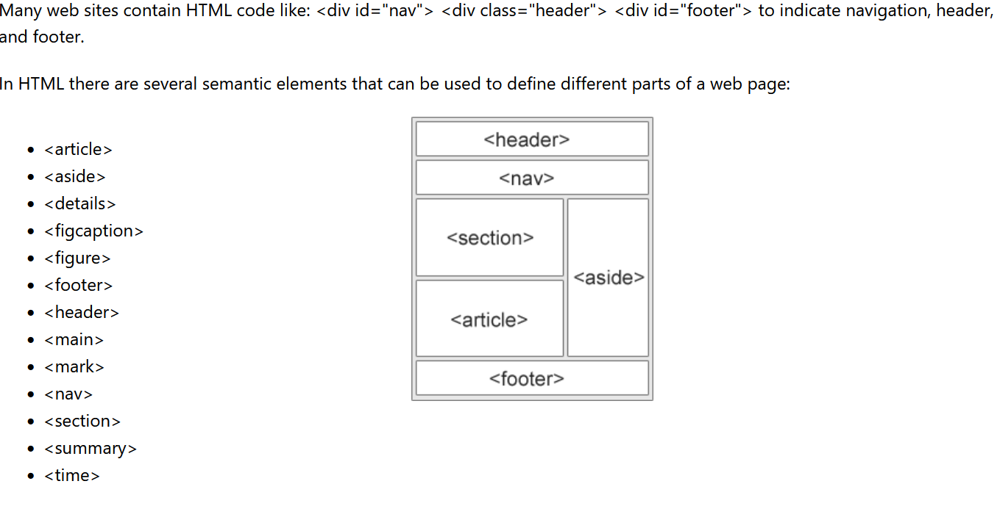

Enkelt responsivt bilde

Bildet skalerer automatisk: bredde = 100% av containeren. Endre max-width i CSS for å justere størrelsene.
Bildet skalerer automatisk: bredde = 100% av containeren. Endre max-width i CSS for å justere størrelsene.